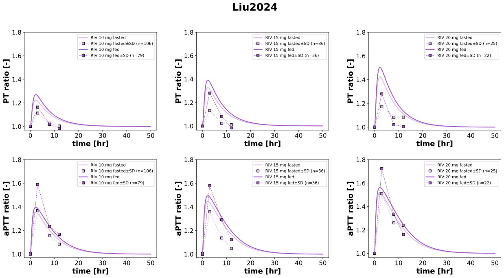

Liu2024
Models
Datasets
- Fig2_rivaroxaban_fasted_10: Liu2024_Fig2_rivaroxaban_fasted_10.tsv
- Fig2_rivaroxaban_fasted_15: Liu2024_Fig2_rivaroxaban_fasted_15.tsv
- Fig2_rivaroxaban_fasted_20: Liu2024_Fig2_rivaroxaban_fasted_20.tsv
- Fig2_rivaroxaban_fed_10: Liu2024_Fig2_rivaroxaban_fed_10.tsv
- Fig2_rivaroxaban_fed_15: Liu2024_Fig2_rivaroxaban_fed_15.tsv
- Fig2_rivaroxaban_fed_20: Liu2024_Fig2_rivaroxaban_fed_20.tsv
- Fig3_aPTT (change relative)_fasted_10: Liu2024_Fig3_aPTT (change relative)_fasted_10.tsv
- Fig3_aPTT (change relative)_fasted_15: Liu2024_Fig3_aPTT (change relative)_fasted_15.tsv
- Fig3_aPTT (change relative)_fasted_20: Liu2024_Fig3_aPTT (change relative)_fasted_20.tsv
- Fig3_aPTT (change relative)_fed_10: Liu2024_Fig3_aPTT (change relative)_fed_10.tsv
- Fig3_aPTT (change relative)_fed_15: Liu2024_Fig3_aPTT (change relative)_fed_15.tsv
- Fig3_aPTT (change relative)_fed_20: Liu2024_Fig3_aPTT (change relative)_fed_20.tsv
- Fig3_prothrombin time (change relative)_fasted_10: Liu2024_Fig3_prothrombin time (change relative)_fasted_10.tsv
- Fig3_prothrombin time (change relative)_fasted_15: Liu2024_Fig3_prothrombin time (change relative)_fasted_15.tsv
- Fig3_prothrombin time (change relative)_fasted_20: Liu2024_Fig3_prothrombin time (change relative)_fasted_20.tsv
- Fig3_prothrombin time (change relative)_fed_10: Liu2024_Fig3_prothrombin time (change relative)_fed_10.tsv
- Fig3_prothrombin time (change relative)_fed_15: Liu2024_Fig3_prothrombin time (change relative)_fed_15.tsv
- Fig3_prothrombin time (change relative)_fed_20: Liu2024_Fig3_prothrombin time (change relative)_fed_20.tsv
Figures
- Fig2: Liu2024_Fig2.svg
- Fig3: Liu2024_Fig3.svg
{kind=link}
Fig2

|
Fig3
|  |
Code
../../../../experiments/studies/liu2024.py
from typing import Dict
from sbmlsim.data import DataSet, load_pkdb_dataframe
from sbmlsim.fit import FitMapping, FitData
from sbmlsim.plot import Axis, Figure
from sbmlsim.simulation import Timecourse, TimecourseSim
from sbmlutils.console import console
from pkdb_models.models import rivaroxaban
from pkdb_models.models.rivaroxaban.experiments.base_experiment import RivaroxabanSimulationExperiment
from pkdb_models.models.rivaroxaban.experiments.metadata import (
Tissue, Route, Dosing, ApplicationForm, Health,
Fasting, RivaroxabanMappingMetaData, Coadministration
)
from pkdb_models.models.rivaroxaban.helpers import run_experiments
class Liu2024(RivaroxabanSimulationExperiment):
"""Simulation experiment of Liu2024."""
doses = [10, 15, 20]
fasting_states = ["fasted", "fed"]
fraction_absorbed = {
"fasted": RivaroxabanSimulationExperiment.fasting_map["fasted"],
"fed": RivaroxabanSimulationExperiment.fasting_map["fed"],
}
colors = {
"fasted_10": "#DDB8EA", # "#F7E6FB",
"fasted_15": "#DDB8EA", # "#EAC6F3",
"fasted_20": "#DDB8EA",
"fed_10": "#A35AC7", #"#DF9EE8",
"fed_15": "#A35AC7", #"#C27AD8",
"fed_20": "#A35AC7",
}
info_figs = {
"Fig2": {
"[Cve_riv]": "rivaroxaban"
},
"Fig3": {
"PT_ratio": "prothrombin time (change relative)",
"aPTT_ratio": "aPTT (change relative)"
}
}
def datasets(self) -> Dict[str, DataSet]:
dsets = {}
for fig_id, variables in self.info_figs.items():
df = load_pkdb_dataframe(f"{self.sid}_{fig_id}", data_path=self.data_path)
for label, df_label in df.groupby("label"):
if "Anti-factor Xa activity" in label:
continue # Not handled yet
dset = DataSet.from_df(df_label, self.ureg)
if "rivaroxaban" in label:
dset.unit_conversion("mean", 1 / self.Mr.riv)
dsets[f"{fig_id}_{label}"] = dset
return dsets
def simulations(self) -> Dict[str, TimecourseSim]:
Q_ = self.Q_
tcsims = {}
for fasting in self.fasting_states:
for dose in self.doses:
sim_id = f"{fasting}_{dose}"
tcsims[sim_id] = TimecourseSim([
Timecourse(
start=0,
end=50 * 60, # 50 hours in minutes
steps=500,
changes={
**self.default_changes(),
"PODOSE_riv": Q_(dose, "mg"),
"GU__F_riv_abs": Q_(self.fraction_absorbed[fasting], "dimensionless"),
}
)
])
return tcsims
def fit_mappings(self) -> Dict[str, FitMapping]:
mappings = {}
for fig_id, variables in self.info_figs.items():
for yid, label in variables.items():
for fasting in self.fasting_states:
for dose in self.doses:
sim_id = f"{fasting}_{dose}"
dataset_id = f"{fig_id}_{label}_{sim_id}"
mappings[f"fm_{dataset_id}"] = FitMapping(
self,
reference=FitData(
self,
dataset=dataset_id,
xid="time",
yid="mean",
yid_sd="mean_sd",
count="count"
),
observable=FitData(
self,
task=f"task_{sim_id}",
xid="time",
yid=yid
),
metadata=RivaroxabanMappingMetaData(
tissue=Tissue.PLASMA,
route=Route.PO,
application_form=ApplicationForm.TABLET,
dosing=Dosing.SINGLE,
health=Health.HEALTHY,
fasting=Fasting.FASTED if fasting == "fasted" else Fasting.FED,
coadministration=Coadministration.NONE,
)
)
return mappings
def figures(self) -> Dict[str, Figure]:
figures = {}
# PK Figure: Fig2
fig_pk = Figure(
experiment=self,
sid="Fig2",
name=self.__class__.__name__,
num_cols=3,
)
plots_pk = fig_pk.create_plots(
xaxis=Axis(self.label_time, unit=self.unit_time),
legend=True,
)
for kp in range(3):
plots_pk[kp].set_yaxis(self.label_riv_plasma, unit=self.unit_riv, max=0.6)
for fasting in self.fasting_states:
for kp, dose in enumerate(self.doses):
sim_id = f"{fasting}_{dose}"
plots_pk[kp].add_data(
task=f"task_{sim_id}",
xid="time",
yid="[Cve_riv]",
label=f"RIV {dose} mg {fasting}",
color=self.colors[sim_id]
)
plots_pk[kp].add_data(
dataset=f"Fig2_rivaroxaban_{sim_id}",
xid="time",
yid="mean",
yid_sd="mean_sd",
count="count",
label=f"RIV {dose} mg {fasting}",
color=self.colors[sim_id]
)
figures[fig_pk.sid] = fig_pk
# PD Figure: Fig3 (combined PT_ratio and aPTT_ratio)
fig_pd = Figure(
experiment=self,
sid="Fig3",
num_rows=2,
num_cols=3,
name=self.__class__.__name__
)
plots_pd = fig_pd.create_plots(
xaxis=Axis(self.label_time, unit=self.unit_time),
legend=True,
)
for kp in range(3):
plots_pd[kp].set_yaxis(self.labels["PT_ratio"], unit=self.units["PT_ratio"], max=1.8)
plots_pd[kp+3].set_yaxis(self.labels["aPTT_ratio"], unit=self.units["aPTT_ratio"], max=1.8)
for fasting in self.fasting_states:
for kp, dose in enumerate(self.doses):
sim_id = f"{fasting}_{dose}"
color = self.colors[sim_id]
# Subplot 1: PT_ratio
plots_pd[kp].add_data(
task=f"task_{sim_id}",
xid="time",
yid="PT_ratio",
label=f"RIV {dose} mg {fasting}",
color=color,
)
plots_pd[kp].add_data(
dataset=f"Fig3_prothrombin time (change relative)_{sim_id}",
xid="time",
yid="mean",
yid_sd="mean_sd",
count="count",
label=f"RIV {dose} mg {fasting}",
color=color,
)
# Subplot 2: aPTT_ratio
plots_pd[kp+3].add_data(
task=f"task_{sim_id}",
xid="time",
yid="aPTT_ratio",
label=f"RIV {dose} mg {fasting}",
color=color,
)
plots_pd[kp+3].add_data(
dataset=f"Fig3_aPTT (change relative)_{sim_id}",
xid="time",
yid="mean",
yid_sd="mean_sd",
count="count",
label=f"RIV {dose} mg {fasting}",
color=color,
)
figures[fig_pd.sid] = fig_pd
return figures
if __name__ == "__main__":
out = rivaroxaban.RESULTS_PATH_SIMULATION / Liu2024.__name__
out.mkdir(parents=True, exist_ok=True)
run_experiments(Liu2024, output_dir=Liu2024.__name__)